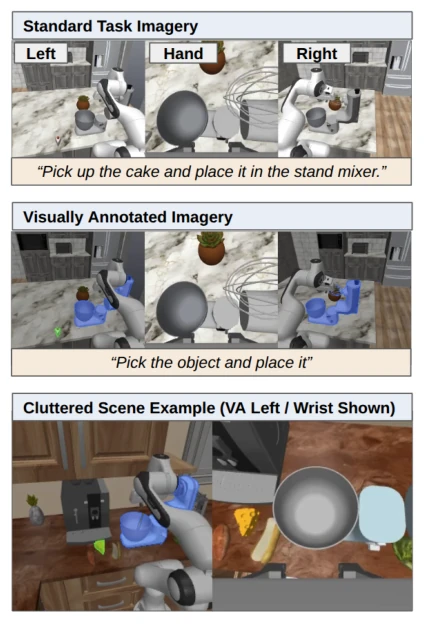

Fig. 2. Camera views and gestures from the first experiment. Top row: Visual state information from the scene, showing an overhead view of four cubes in an uncluttered setting on the left, a typical wrist view in the center, and an example of a cluttered scene on the right. Bottom row: Wrist gestures used by participants to condition EC-VLA during training and test.
Fig. 3. Behavior detail for the EC-VLA (left) and VA-VLA (right) trials, showing various partial success criteria as portions of trials. These include failure (red), stage 1 partial credit (yellow), stage 2 partial credit (light green), and success (dark green). The black lines show changes in task completion score, which is an aggregate score of these behaviors. EC-VLA values are averages of all three participant models, and VA-VLA values are only taken from the tasks that can add clutter. (C) denotes cluttered trials
其他图片Other Figures

Fig. 5. State information used in experiment 2, which always uses a left camera, a wrist camera, and a right camera. In the baseline model, the images are unaltered and paired with a text description (top). In VA-VLA (center), the text is generic and the left and right cameras have visual annotations for the target object (green) and destination (blue). In the cluttered trials (bottom), additional objects are placed in the scene. In practice this uses all three views and is either annotated or not depending on the model.